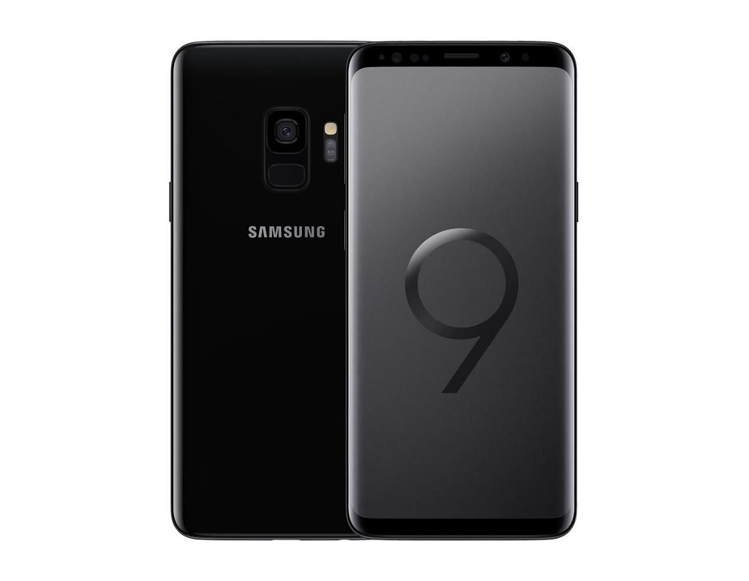

Samsung mobile
Samsung Galaxy S to linia zaawansowanych urządzeń mobilnych z systemem Android produkowanych przez Samsung Electronics, oddział Samsunga z Korei Południowej.
Seria składała się początkowo ze smartfonów, a pierwsze urządzenie, Samsung Galaxy S, zostało ogłoszone w marcu 2010 roku i wydane do sprzedaży w czerwcu tego roku. Od czasu wprowadzenia smartfona Samsung Galaxy Note w 2011 roku linia Galaxy S współistniała z linią Galaxy Note jako flagowy smartfon Samsunga.
Samsung później rozszerzył linię Galaxy S na tablety dzięki ogłoszeniu pierwszej generacji Galaxy Tab S w czerwcu 2014 roku i wydaniu jej w następnym miesiącu.

Model z serii Galaxy S